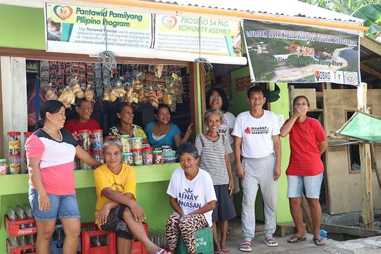
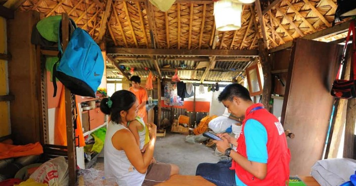
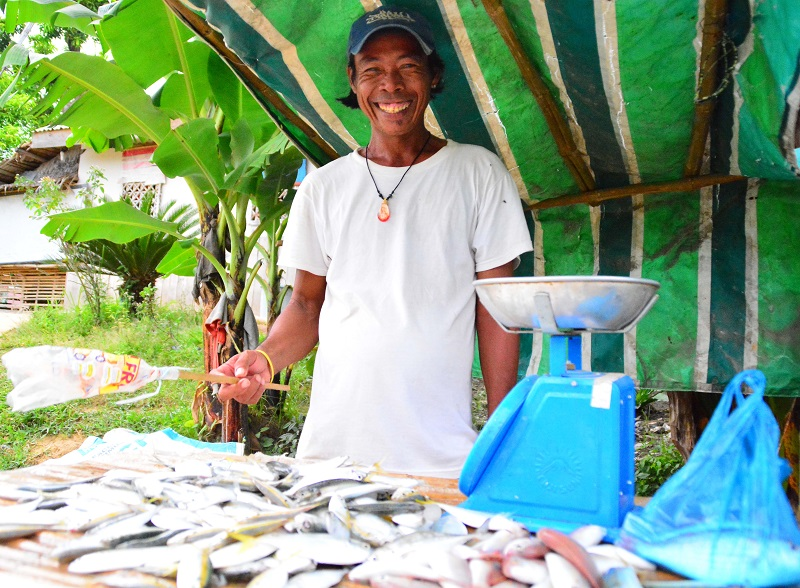

Combating Poverty Through Government-Aided Programs and Laws
Pantawid Pamilyang Pilipino Program
The Pantawid Pamilya Pilipino Program, also known as 4Ps, is a government initiative that offers conditional cash handouts to the Philippines' most extreme cases of poverty. In order to give children aged 0 to 18 a better future, the program works to keep them healthy and in school. The government extended the program, which has been in place since 2007, in December 2016 to include 20 million Filipinos, living in 4.4 million homes. The majority of the country's poor people—roughly 20% of the population—benefit from the program.
Currently, the program helps 9 million kids, 1.9 million of them are secondary school students. For 4Ps households' elementary-aged children, enrollment in the program has likewise nearly reached 100%.
Rice Tariffication Law
The bill eliminated NFA's regulatory and importation activities and "tarifficated" QRs into regular customs taxes. The law establishes an annual Rice Fund as production support and other aid to rice farmers in an effort to lower the price of the nation's main food staple and to provide for any potential negative effects on palay growers.
The Rice Competitiveness Enhancement Fund receives the rice tariffs collected from imports pursuant to Republic Act (RA) No. 11203, often known as the Rice Tariffication Law (RTL) (RCEF). The Rice Farmer Financial Assistance, or RFFA, receives donations that are in excess of the P10 billion budget. It became a law on March 5, 2019.
By contributing at least P10 billion year to the RCEF up until 2024, the RTL guarantees that farmers will directly benefit from the liberalization of the rice trading market.
Universal Access to Quality Tertiary Education Act
In August 2017, President Rodrigo Duterte signed into law Republic Act 10931, also known as the Universal Access to Quality Tertiary Education Act, giving impoverished Filipino students the chance to earn college degrees through free tuition and the exemption of other fees in SUCs. Additionally, it permits the Tertiary Education Subsidy, which finances the enrollment of underprivileged students at private institutions in areas without access to state or local universities and colleges.
This initiative is an investment in the future of the Filipino family as well as our youth. This policy enables more Filipinos to enroll in technical or college-level courses, which should increase their access to work and other sources of support. Free tertiary education also frees up money that parents and breadwinners may otherwise spend on other necessities like housing and healthcare, or put more money up for savings.
National Household Targeting System for Poverty Reduction
An information management system called Listahanan, also called the National Household Targeting System for Poverty Reduction (NHTS-PR), identifies who and where the impoverished are across the country. A database of low-income households is made available by this system to National Government Agencies (NGAs) and other social protection stakeholders so that they can use it to identify potential customers for their social protection programs and services. By focusing resources and efforts on those who most need help, a standardized set of criteria for classifying the poor provides cheaper costs, a greater return on investment, and increased transparency and credibility for social safety programs. There is a four-phase project cycle that is followed when identifying disadvantaged households.
The Preparatory Phase sets the stage for this by identifying the target locations for home assessment and the suitable data collection methods. The phase of data collection and analysis comes next. A standardized questionnaire known as the Household Assessment Form (HAF) is used during this phase to collect basic and socioeconomic information from households. The HAF is then processed through a proxy means test (PMT), which estimates family income and compares it to the provincial poverty line. The last stages of the PMT involve local validation, finalization, compilation, and generation of National and Regional Profiles of the Poor.
Sustainable Livelihood Program
The Sustainable Livelihood Program (SLP) is a community-based program for Filipinos that aims to raise the socioeconomic standing of program participants.
The implementation of SLP is done via a two-track program. The Microenterprise Development Track, the first track, helps micro-enterprises develop organizationally and financially. The Work Facilitation Track, the second track, helps individuals find suitable employment prospects.
Both courses follow the Community-Driven Enterprise Development (CDED) methodology, which gives program participants the tools they need to actively contribute to the production and labor markets by taking a look at the available resources and reachable markets. The CDED plan supports each community's Local Economic Development (LED) strategy and Value Chain Production.
The program has grown from assisting 46,000 families in 2011 to 340,000 in 2015 to 166,000 families in 2017.
Articles Correlating to the Youth:
Young People Tell Us How They Are Fighting Poverty & Driving SustainabilityYouth Engagement with Poverty